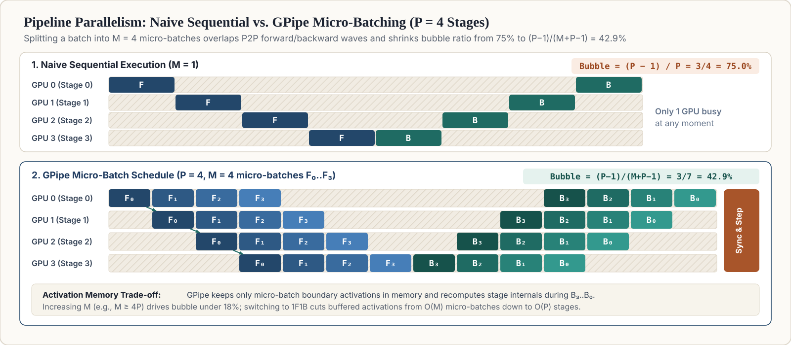

Distributed training often feels like a soup of acronyms—DDP, ZeRO, FSDP, TP, PP, EP—until you realize almost every parallelism strategy is an answer to two mechanical questions: which axis of the model or batch is cut across devices, and which collective primitive fixes the missing slice before the next matrix multiply.
This note synthesizes the geometric sharding calculus from Google's JAX Scaling Book with the PyTorch/CUDA system designs behind Megatron-LM, ZeRO, GPipe, and DeepSpeed-MoE. Rather than treating data, tensor, pipeline, and expert parallelism as isolated recipes, we trace every strategy back to four communication operations—AllGather, ReduceScatter, AllReduce, and All-to-All—plus peer-to-peer send/recv.
Why Single-GPU Training Breaks & Sharding Notation
The 16Φ Mixed-Precision Memory Budget
A model with Φ parameters does not occupy 2Φ bytes on a GPU during training. Standard mixed-precision training with Adam (used across PyTorch AMP, DeepSpeed, and Megatron-LM) holds computation tensors in 16-bit floating point (FP16 or BF16) for throughput, while keeping optimizer arithmetic in FP32 so small gradient updates do not underflow or round away to zero.
| Component | Precision | Bytes per Parameter | 7B Model | 70B Model |
|---|---|---|---|---|
| Model Weights (Fwd / Bwd) | BF16 / FP16 | 2Φ |
14 GB | 140 GB |
| Gradients | BF16 / FP16 (or FP32) | 2Φ (or 4Φ) |
14 GB | 140 GB |
| Master Weights (Optimizer Copy) | FP32 | 4Φ |
28 GB | 280 GB |
Adam First Moment (m) |
FP32 | 4Φ |
28 GB | 280 GB |
Adam Second Moment (v) |
FP32 | 4Φ |
28 GB | 280 GB |
| Total Static Model State | Mixed | 16Φ (18Φ if FP32 grads) |
112 GB | 1.12 TB |
Notice two practical details highlighted in Megatron-LM's distributed mixed-precision implementation. First, an 80 GB H100 cannot hold even the static 112 GB optimizer and parameter state of a 7B dense model without sharding or offloading, before counting activations, KV caches, or CUDA context overhead. Second, storing gradients in FP16 risks underflow before accumulation, so Megatron-LM either applies dynamic loss scaling (multiplying the loss by 2k, unscaling before clipping, and skipping the step if any inf/NaN appears) or maintains a contiguous FP32 gradient buffer (pushing total static state to 18Φ) that lets communication collectives act on a single flat array rather than hundreds of small parameter tensors.
Named-Axis Mesh Notation & Worked Shard Math
When reasoning across dozens or thousands of GPUs, verbal descriptions like "split along columns across some cards" quickly become error-prone. The JAX Scaling Book assigns explicit names to physical device mesh axes—say Mesh(X=8, Y=4) for 32 GPUs—and writes sharding directly inside a tensor's shape subscript:
A[EY, F]means tensorAhas logical shape[E, F], its first dimensionEis partitioned along mesh axisY, and its second dimensionFis unsharded. Because axisXdoes not appear in any subscript, every slice ofAis replicated across all ranks alongX.C[B, F]{UY}denotes an unreduced (partial sum) tensor across mesh axisY: every rank in aY-group already has shape[B, F], and the true mathematical matrix is the elementwise sum over all ranks alongY.
Let us test this notation on a concrete sanity check that trips up almost everyone the first time they see it: suppose we have Mesh(X=8, Y=4) (32 GPUs total) and a BF16 matrix A[EY, F] with E = 2048 and F = 8192. Why does each GPU hold 8 MiB rather than 64 × 8192 × 2 B = 1 MiB?
Dividing 2048 by 32 to get 64 rows per GPU splits E across all 32 GPUs. However, the subscript EY specifies that E is cut only along axis Y, which has size 4, giving 2048 / 4 = 512 rows per GPU. Since axis X is absent from A's subscripts, the 32 cards form 8 independent groups along X, and each group holds an identical 4-way partition of the 2048 rows:
Group (X) |
Y = 0 |
Y = 1 |
Y = 2 |
Y = 3 |
|---|---|---|---|---|
X = 0 |
Rows 0–511 | Rows 512–1023 | Rows 1024–1535 | Rows 1536–2047 |
X = 1 |
Rows 0–511 | Rows 512–1023 | Rows 1024–1535 | Rows 1536–2047 |
X = 2 .. 7 |
Identical rows 0–511 | Identical rows 512–1023 | Identical rows 1024–1535 | Identical rows 1536–2047 |
Every GPU therefore stores 512 × 8192 × 2 B = 8,388,608 B = 8 MiB. Running AllGatherY concatenates within each 4-GPU Y-group to produce the full [2048, 8192] tensor (32 MiB). Notice how the reverse check immediately exposes the 64-row fallacy: if each GPU really held only 64 rows, AllGatherY across 4 ranks could assemble only 64 × 4 = 256 rows, leaving 7/8 of the matrix missing along X.
The Four Collective Primitives & Sharded Matrix Multiplication
AllGather, ReduceScatter, AllReduce, and All-to-All
When tensors live on a device mesh, changing how data is distributed (or combining partial sums) requires collective communication inside a process group—for example, all 4 GPUs sharing a fixed X coordinate along the Y axis. Four primitives account for virtually all collective traffic in modern LLM training. You can distinguish them by asking just two questions: Does data get summed elementwise? And what does each GPU hold at the end?
| Operation | Action Across Ranks | Per-Rank Output | Canonical Use Case |
|---|---|---|---|
AllGather |
Collects each rank's shard and concatenates in rank order | Every rank holds the full tensor ([EY, F] → [E, F]) |
FSDP / ZeRO-3 reconstructing a layer's full weight right before compute |
ReduceScatter |
Sums elementwise across ranks, then splits result into shards | Each rank keeps only its own shard of the sum ({UY} → [FY]) |
Syncing gradients so each rank updates only the parameters it owns |
AllReduce |
Sums elementwise across ranks and broadcasts full result everywhere | Every rank holds the full summed tensor ({UY} → [F]) |
DDP gradient sync, or merging inner-dimension partial matmuls |
All-to-All |
Splits local tensor into N chunks and sends chunk j to rank j |
Each rank gathers rank-specific chunks along a new axis ([EY, F] → [E, FY]) |
MoE routing tokens to experts, or resharding row-split to col-split |
Running the exact same initial vector across all four operations on two GPUs—GPU 0 = [1, 2] and GPU 1 = [3, 4]—makes the differences concrete:
| Collective | GPU 0 Output | GPU 1 Output | What Changed |
|---|---|---|---|
| Initial input | [1, 2] |
[3, 4] |
Baseline local shards |
AllGather |
[1, 2, 3, 4] |
[1, 2, 3, 4] |
Concatenation without summing (size doubles) |
ReduceScatter |
[1+3] = [4] |
[2+4] = [6] |
Elementwise sum followed by split (size halves) |
AllReduce |
[4, 6] |
[4, 6] |
Elementwise sum replicated everywhere |
All-to-All |
[1, 3] |
[2, 4] |
Chunk-0 pieces to GPU 0, chunk-1 pieces to GPU 1 (size unchanged) |
Two common misconceptions clear up immediately when you stare at that table. First, is AllReduce = AllGather + Scatter? No—it is ReduceScatter + AllGather, in that order. Plain Scatter only deals chunks without adding them, whereas ReduceScatter performs the 1+3 and 2+4 summation while distributing the reduced halves [4] and [6]; a subsequent AllGather then stitches [4, 6] onto both GPUs. Conversely, when downstream computation is already sharded (as in FSDP or Sequence Parallelism), stopping at ReduceScatter saves half the communication.
Second, what separates AllGatherY from All-to-AllY when both end up concatenating data along rows? Return to our 4-GPU Y-group holding [512, 8192] per rank (512 distinct rows, all 8192 columns):
Operation on A[EY, F] |
What Each GPU Sends | Shape on Each GPU After | BF16 Footprint |
|---|---|---|---|
AllGatherY |
Broadcasts all 512 local rows intact to peers | [2048, 8192] ([E, F]) |
32 MiB (4× growth) |
All-to-AllY |
Slices its 8192 cols into 4 blocks of 2048, sends block j to GPU j |
[2048, 2048] ([E, FY]) |
8 MiB (1× unchanged) |
Look at GPU 0 in All-to-AllY: it receives one 512 × 2048 slice (the first 2048 columns) from each of the 4 cards and concatenates them along the row dimension to form [2048, 2048], while GPU 1 collects the second 2048-column slice across all 2048 rows. Thus AllGather replicates the entire tensor everywhere, whereas All-to-All swaps which axis is sharded without inflating per-GPU memory.
One-Sentence Decision Rule: Ask what the next computation lacks.
- Each rank only holds part of the tensor, and the next op needs the full tensor →
AllGather. - Each rank holds a full-shaped partial sum, and the next op needs the full sum →
AllReduce. - Each rank holds a full-shaped partial sum, and the next op only needs its own shard →
ReduceScatter. - Each rank holds a shard along axis A, and the next op needs shards along axis B →
All-to-All.
![Comparison of AllGather, ReduceScatter, AllReduce, and All-to-All on both a 2-GPU [1,2]/[3,4] vector and a 4-GPU Y-axis shard of A[E_Y, F] in a (X=8, Y=4) mesh.](./fig-collectives.svg)
Four Ways to Multiply Sharded Matrices
With the four primitives in hand, consider a single linear layer Out[B, F] = In[B, D] · W[D, F], where B is batch/tokens, D is hidden width, and F is output width. Following the JAX Scaling Book, partitioning along mesh axis Y reduces to four fundamental cases:
- Cut the free output dimension (
In[B, D] · W[D, FY] → Out[B, FY]): Zero communication in forward! Every rank has fullInand computes different output columns. (Because inputs are replicated acrossY, backward weight/activation sync uses anAllReduceYon gradients ofIn.) This is Megatron-LM'sColumnParallelLinear. - Cut the contracting dimension (
In[B, DY] · W[DY, F] → Out[B, F]{UY}): Each rank computes a partial dot product over1/Yof the inner dimensionD, leaving an unreduced partial sum{UY}. Follow withAllReduceYto produce replicatedOut[B, F](Megatron-LM'sRowParallelLinear), orReduceScatterYto yieldOut[BY, F]orOut[B, FY]if the subsequent layer expects sharded activations. - Shard weight along the contracting dimension while input is batch-sharded (
In[BX, D] · W[DX, F]): A local matmul cannot execute becauseDis split acrossXonWwhile full onIn. We runAllGatherX(W[DX, F]) → W[D, F], multiply locally to getOut[BX, F], and discard the remote weight shards—which is literally FSDP / ZeRO-3. - 2D Weight & Activation Sharding (
In[BX, DY] · W[DY, FX]): Both batch and hidden dims are distributed across the mesh; weights may beAllGathered alongXwhile partial products reduce alongY. On high-scale clusters, engineers decomposeAllGatherorReduceScatterinto ring hops alongYso each hop overlaps matrix-multiply compute on one shard with transferring the next shard.
Data Parallelism: From DP & DDP to ZeRO / FSDP
From Single-Process DP to Bucketed Ring DDP
Data Parallelism replicates weights across N workers so each GPU processes a different micro-batch [BX, D]. PyTorch's legacy DataParallel (DP) ran in a single Python process using threads: every forward pass scattered inputs from GPU 0, replicated weights onto worker GPUs, gathered outputs back to GPU 0 to compute loss, and gathered gradients on GPU 0 for the optimizer step—creating severe GIL contention and turning GPU 0 into a memory and PCIe bottleneck.
DistributedDataParallel (DDP) fixed this with one process per GPU and peer-to-peer Ring/Tree AllReduce gradients over NCCL. Rather than waiting for the entire backward pass to finish before synchronizing, DDP groups parameter gradients into reverse-order buckets (typically ~25 MB each): as soon as the backward pass populates the last layer's bucket, NCCL kicks off an asynchronous AllReduce on that bucket while earlier layers are still backpropagating. Ring AllReduce implements the two-phase ReduceScatter + AllGather decomposition directly, transmitting 2 · (N − 1) / N · Φbytes ≈ 2Ψ bytes per GPU per step (where Ψ is total model parameter bytes) regardless of how large N grows.
ZeRO-1 / 2 / 3 and PyTorch FSDP Under the Hood
DDP synchronizes computation perfectly, yet wastes almost all GPU HBM: every one of the N ranks holds an identical copy of 16Φ bytes—parameters, gradients, and all 12Φ of Adam optimizer state—and executes the exact same Adam update redundantly. In ZeRO (Zero Redundancy Optimizer), Rajbhandari et al. observed that sharding those states across data-parallel ranks turns static 16Φ storage into O(Φ/N) without changing the mathematical optimization trajectory.
Returning to our 2-GPU worked example where g0 = [1, 2] and g1 = [3, 4] (sum [4, 6]) clarifies exactly how DDP and ZeRO-3/FSDP differ during a step:
- In DDP, both GPUs start with complete weights
W, run backward locally to produceg0andg1, callAllReduceso both receive[4, 6], and run identical full-model Adam updates. - In ZeRO-3 / FSDP, GPU 0 permanently stores only shard
W0(and optimizer stateOS0), while GPU 1 storesW1andOS1. Immediately before layer compute (fwd or bwd), both callAllGather(W)to assemble temporary full weights, run forward/backward, and immediately free remote weight shards. When backward produces full local gradientsg0 = [1, 2]andg1 = [3, 4], they callReduceScatter(g)instead ofAllReduce: GPU 0 keeps only[4]to updateW0viaOS0, and GPU 1 keeps only[6]to updateW1viaOS1.
| Stage | Sharded State | Memory per GPU (16Φ) | Memory at N = 8 | Comm Volume per Step (vs DDP 2Ψ) |
|---|---|---|---|---|
| DDP (Baseline) | None | 16Φ |
16.0Φ |
2Ψ (1.0×, one AllReduce of grads) |
| ZeRO-1 | Optimizer State (OS) | 4Φ + 12Φ/N |
5.50Φ (2.9× smaller) |
2Ψ (1.0×, RS grads + AG updated params) |
| ZeRO-2 | OS + Gradients (G) | 2Φ + 14Φ/N |
3.75Φ (4.3× smaller) |
2Ψ (1.0×, RS grads + AG updated params) |
| ZeRO-3 / FSDP | OS + G + Parameters (P) | 16Φ/N |
2.00Φ (8.0× smaller) |
3Ψ (1.5×: AG fwd + AG bwd + RS grads) |
Why do ZeRO-1 and ZeRO-2 cost the exact same total communication (2Ψ) as DDP? Because DDP's AllReduce already equals ReduceScatter(1Ψ) + AllGather(1Ψ): ZeRO-1/2 simply replaces the second half (AllGather of gradients) with an AllGather of updated weights after each rank runs its 1/N Adam update! Only ZeRO-3 adds an extra 1Ψ AllGather during backward recomputation of temporary weights (or saves the weights if memory allows), raising total volume to 3Ψ—which PyTorch FSDP hides by prefetching layer l+1 weights concurrently with computing layer l.

Tensor Parallelism: Megatron-LM & Autograd Hooks
Paired Column & Row Sharding Across MLP and Attention
ZeRO-3 reduces parameter and optimizer memory linearly with N, but it does not shrink activation memory of a single wide layer—nor can pure DP keep batch sizes reasonable when scaling to huge parameter counts. Tensor Parallelism (TP) splits individual matrix multiplications inside a layer. Naive TP would insert an AllReduce or AllGather after every linear projection, stalling on communication twice as often as needed. Megatron-LM avoids this by pairing Column-Parallel followed by Row-Parallel weights so intermediate activations remain sharded cleanly across non-linearities.
1. MLP Block (GeLU(X · A) · B): Split weight A [D, F] column-wise across TP ranks (A = [A0, A1]) and split B [F, D] row-wise (B = [B0; B1]). Rank i computes Yi = GeLU(X · Ai)—since GeLU is elementwise, GeLU([X A0, X A1]) = [GeLU(X A0), GeLU(X A1)] without any synchronization! Next, multiplying Yi by Bi yields partial sums Zi = Yi · Bi of full shape [B, S, D]{UTP}, matching Case 2 above, which a single forward AllReduce turns into complete output Z.
2. Multi-Head Self-Attention: Because attention heads are independent up until the final output projection WO, Megatron shards heads cleanly along the TP axis: project Q, K, V with Column-Parallel weights (each rank receives h / TP heads), run local scaled dot-product attention with zero communication, and pass per-rank head outputs into Row-Parallel WO followed by one forward AllReduce. Notice how embedding tables also shard neatly: VocabParallelEmbedding splits vocabulary rows (masking out-of-range IDs before an AllReduce), while the output logits projection pairs with VocabParallelCrossEntropy so logits never have to be gathered in full—only scalar max-logits and exp-sums over the small TP group are reduced.
In baseline Megatron-LM, one Transformer layer performs 2 AllReduces in forward (one after MHA, one after MLP) and 2 AllReduces in backward. Megatron Sequence Parallelism (Megatron-SP) sharpens this further by replacing those AllReduces with ReduceScatter into LayerNorm/Dropout and AllGather leaving them: same total communication volume (AllReduce = RS + AG), but LayerNorm/Dropout activations also shrink by TP×.

Megatron Source Structure: f, g, and NVLink Constraints
Inspecting Megatron-LM's mpu/layers.py and mpu/mappings.py reveals how remarkably concise PyTorch's autograd glue is for TP. Every TP block is bracketed by two conjugate custom torch.autograd.Functions named f and g:
class _CopyToModelParallelRegion(torch.autograd.Function):
"""Conjugate operator f: Identity in forward, AllReduce in backward."""
@staticmethod
def forward(ctx, input_):
return input_
@staticmethod
def backward(ctx, grad_output):
return _reduce(grad_output) # AllReduce across TP group
class _ReduceFromModelParallelRegion(torch.autograd.Function):
"""Conjugate operator g: AllReduce in forward, Identity in backward."""
@staticmethod
def forward(ctx, input_):
return _reduce(input_) # AllReduce across TP group
@staticmethod
def backward(ctx, grad_output):
return grad_outputWhy do backward gradients through f require an AllReduce while forward passes do not? In forward, X is identical on both GPUs, so ColumnParallelLinear splits outputs cleanly; during backward, however, dL/dX = ∑i (dL/dYi) · AiT sums partial input gradients arriving from every TP rank's subset of columns! Conversely, RowParallelLinear finishes with g, whose forward runs AllReduce on partial outputs and whose backward simply passes the identical upstream gradient to each rank's Bi.
Because TP inserts 4 synchronous blocking AllReduces per layer on critical-path activations (not weight gradients that could wait for buckets), communication latency dominates unless TP stays inside high-bandwidth, low-latency intra-node fabrics such as NVLink/NVSwitch. That is why standard practice caps TP ≤ 8 (one DGX node).
Pipeline Parallelism: GPipe Micro-Batching & Memory
Eliminating Naive Bubbles with M Micro-Batches
When a model outgrows a single 8-GPU node, stretching TP across slower inter-node InfiniBand stalls every layer. Pipeline Parallelism (PP) splits the model vertically across layers into P sequential stages (for instance, 32 Transformer layers partitioned into 8 layers per stage across 4 GPUs), communicating only tiny point-to-point activation tensors at stage boundaries via send/recv.
If you simply run one full batch straight down Stages 0 → 1 → 2 → 3 and back 3 → 2 → 1 → 0, only 1 of P GPUs works at any instant, wasting (P − 1) / P = 75% of cluster time at P = 4 as idle pipeline "bubbles." GPipe cures this by splitting each global mini-batch into M smaller micro-batches (F0 .. FM−1) that stream through stages one right after another:
- Forward & Backward Latency: Stage 0 runs
F0while Stage 1 stays idle for 1 step; onceF0moves to Stage 1, Stage 0 immediately beginsF1. Total pipeline fill + drain overhead across one F-wave and one B-wave is(P − 1)idle slots versusMactive micro-batch slots, reducing the bubble fraction to(P − 1) / (M + P − 1). WithP = 4andM = 4, bubble drops from75%to3/7 ≈ 42.9%; onceM ≥ 4P(e.g.,M = 16), bubble drops below16%. - Synchronous Optimizer Step: Gradients computed across
BM−1 .. B0accumulate locally on each stage without updating weights mid-flight, preserving the exact synchronous SGD convergence semantics of single-device large-batch training. - Re-materialization (Activation Checkpointing): Buffering internal activations for all
Min-flight micro-batches on every stage would blow up memory byO(M). GPipe stores only each micro-batch's stage-boundary activation tensor during forward and recomputes the stage's internal activations during backward (trading ~33% extra forward FLOPs for massive memory headroom). Later schedules such as PipeDream-Flush / 1F1B interleave forward and backward passes once the pipeline fills, cutting peak buffered micro-batches fromO(M)down toO(P)even without full recomputation.


Expert Parallelism: DeepSpeed-Megatron MoE
Top-k Routing, Capacity Factor, and Load-Balancing Loss
Mixture-of-Experts (MoE) Transformers decouple parameter count from FLOPs per token by replacing each dense FFN with E smaller expert FFNs while routing each token dynamically to only the top-k experts (commonly k = 1 in Switch Transformer or k = 2 in GShard). For a hidden state x, a linear router computes gate logits Wg · x and normalized softmax weights over top-k indices; the final output combines each selected expert output weighted by its routing score gi(x).
Making dynamic token routing compile cleanly onto fixed-shape GPU kernels introduces two system invariants from GShard / DeepSpeed-MoE:
- Expert Capacity (
C): Because GPUs execute fixed tensor shapes efficiently and memory must be statically bounded, each expert allocates a fixed buffer ofC = ⌈(tokens_per_batch · k / E) · capacity_factor⌉slots (withcapacity_factortypically1.0–1.5). Tokens assigned to an overloaded expert beyondCare dropped (passing straight through the residual connection), while underfilled experts pad unused slots with zeros. - Auxiliary Load-Balancing Loss: Without regularization, greedy gating quickly collapses so nearly every token picks 1–2 "popular" experts, causing severe straggler skew and massive token dropping. GShard and Switch add a differentiable penalty encouraging uniform dispatch across
Eexperts over a batchBof tokens:Laux = α · E · ∑i=1..E fi · Pi, wherefiis the fraction of tokens dispatched to expertiandPiis the average router softmax probability assigned to experti(minimized at uniform1/E).
Two-Pass All-to-All & DP = EP × EDP Process Groups
Under ZeRO-3, tokens stay put and weights move via AllGather. In Expert Parallelism (EP), dense FFN weights are far too huge across hundreds of experts to replicate dynamically; instead, expert weights stay pinned to their host GPUs and tokens fly to the experts via All-to-All.
Trace a minimal 2-GPU example: suppose Expert 0 lives permanently on GPU 0 and Expert 1 lives on GPU 1. After Attention, GPU 0 holds tokens [a, b] and GPU 1 holds [c, d]. Suppose the router sends a, c → Expert 0 and b, d → Expert 1:
- First
All-to-All(Dispatch):GPU 0keepsalocally and sendsbtoGPU 1;GPU 1sendsctoGPU 0and keepsdlocally. NowGPU 0executesExpert 0on[a, c]andGPU 1executesExpert 1on[b, d]. - Second
All-to-All(Combine): Processed token representations fly back to their originating ranks soGPU 0resumes with[a', b']andGPU 1resumes with[c', d']for the residual connection and next Attention block. (Each pass swaps which dimension is sharded:[EP, Tokensloc, D] ↔ [Tokensexp, EP, D].)
Now inspect how DeepSpeed-Megatron combines EP with Data Parallelism and Tensor Parallelism across a cluster. Suppose we have 8 DP GPUs and 4 experts, setting EP = 4. Because Attention, Embeddings, LayerNorm, and the Router are shared across all 8 cards, while E0..E3 only appear once inside every 4-GPU group, DeepSpeed-Megatron decomposes the global DP group into two orthogonal sub-groups such that DP = EP × EDP:
EP Group(size 4:{0,1,2,3}and{4,5,6,7}): Handles forward/backwardAll-to-Alltoken dispatch and combine across distinct experts.EDP Group(Expert Data Parallel, sizeDP / EP = 2:{0,4}, {1,5}, {2,6}, {3,7}): Runs gradientAllReduceonly across GPUs owning identical expert IDs—because averagingE0's gradients withE1's gradients would corrupt both experts!- Full
DP Group(size 8:{0..7}): Runs gradientAllReducefor all non-expert parameters (Attention, Router, Embeddings) across all 8 GPUs.
In DeepSpeed-Megatron source code, this requires wrapping expert layers with a flag suppressing full-DP reduction, assigning them to an EDP communicator, and layering intra-node TP inside each expert's two-layer MLP so total cluster size factors cleanly as world_size = PP × DP × TP with DP = EP × EDP.
![Left: 2-GPU MoE All-to-All dispatch moving [a,b] and [c,d] to [a,c] on Expert 0 and [b,d] on Expert 1, then All-to-All combine back. Right: 8-GPU DeepSpeed-Megatron grid showing DP(8) = EP(4) x EDP(2).](./fig-moe-alltoall.svg)
Putting It Together: Designing a 4D Parallel Topology
Every parallelism axis trades off activation memory, weight/optimizer memory, and communication volume differently—and therefore maps onto a different level of your cluster interconnect hierarchy.
| Axis | What It Splits | Collective Used | Hardware Placement | Primary Memory Savings |
|---|---|---|---|---|
TP (Tensor) |
Intra-layer matrix cols & rows | Blocking AllReduce (or RS+AG with SP) |
Intra-node NVLink (≤ 8) |
Weights + Activations (linear with TP) |
EP (Expert) |
Disjoint MoE experts across GPUs | 2× All-to-All per MoE layer |
NVLink or full-bisection RoCE/IB | Expert parameters & optimizer state |
PP (Pipeline) |
Transformer layers vertically into stages | Tiny P2P send / recv |
Inter-node (tolerates latency well) | Weights + OS + non-buffered activations |
DP / ZeRO |
Global batch + optionally OS/G/P | Overlapped AllReduce / RS+AG |
Outer fabric / remaining GPUs | Batch activations + ZeRO 16Φ/DP |
Suppose you are configuring a 64-GPU cluster (8 nodes × 8 H100 GPUs per node). Start from the fastest link outward:
- For a dense 70B model: Pin
TP = 8inside each 8-GPU node over NVLink so every layer's 4 synchronousAllReduces stay off InfiniBand. If weights plus activations still exceed a single 8-GPU node, split layers vertically across nodes withPP = 2(or4) and choose micro-batchesM ≥ 4Punder a 1F1B schedule to keep pipeline bubbles low. Allocate the remaining GPUs toDP = 64 / (8 × 2) = 4with ZeRO-1 (sharding12Φoptimizer state at zero extra communication vs DDP). - For an 8-expert MoE model on the same 64 GPUs: Keep
TP = 4(or8) inside nodes,PP = 2across nodes, givingDP = 4(or8) replicas of Attention; then factorDP = EP × EDP—for instanceEP = 4, EDP = 1so all 8 experts fit across fast inter-node peers with zero duplicate expert weights, while Attention gradients still reduce acrossDP.
Citation
If you reference these diagrams or sharding derivations, please cite:
Chaoran Feng (2026). "Distributed LLM Training from First Principles: Collectives, Sharding, and Parallelism". Chaoran Feng's Blog. https://www.falcary.com/blogs/distributed-training/
@article{feng2026distributed,
title = {Distributed LLM Training from First Principles: Collectives, Sharding, and Parallelism},
author = {Feng, Chaoran},
year = {2026},
month = {November},
url = {https://www.falcary.com/blogs/distributed-training/}
}References
- How to Scale Your Model, Part 3: Sharded Matrices and How to Multiply Them. Austin, Bradbury, Blake, Chou, & Roy, Google DeepMind, 2025.
- Megatron-LM: Training Multi-Billion Parameter Language Models Using Model Parallelism. Shoeybi et al., NVIDIA, 2019 (arXiv:1909.08053).
- ZeRO: Memory Optimizations Toward Training Trillion Parameter Models. Rajbhandari et al., Microsoft DeepSpeed, SC 2020 (arXiv:1910.02054).
- GPipe: Efficient Training of Giant Neural Networks using Pipeline Parallelism. Huang et al., Google Brain, NeurIPS 2019 (arXiv:1811.06965).
- GShard: Scaling Giant Models with Conditional Computation and Automatic Sharding. Lepikhin et al., Google Brain, ICLR 2021 (arXiv:2006.16668).
- DeepSpeed-MoE: Advancing Mixture-of-Experts Inference and Training to Power Next-Generation AI Scale. Rajbhandari et al., ICML 2022 (arXiv:2201.05596).
- 猛猿，图解大模型训练 系列（流水线并行 GPipe、数据并行 DP/DDP/ZeRO 上下篇、张量模型并行与 Megatron 源码解读 2–3、DeepSpeed-Megatron MoE 原理与源码解读），知乎专栏。